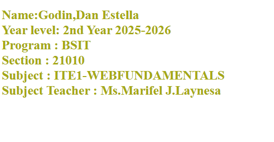
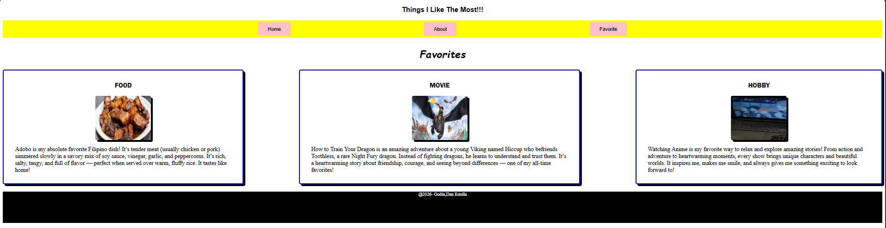

👋 Hello and Welcome! 🎉
I'm a passionate and curious learner who loves exploring how technology shapes the world we live in — from the apps we use daily to the games and websites that connect people across the globe. This portfolio is a collection of my journey, my skills, and the projects I've built along the way as an aspiring IT professional. Thank you for visiting!
I'm Godin Dan Estella, 20 years old, currently pursuing a Bachelor of Science in Information Technology (BSIT) at Bestlink College of the Philippines. I chose this course because I've always been deeply fascinated by how things work behind the screens — how applications are developed, how video games come to life, and how websites are built to serve and connect people in our modern digital world. I want to not just use technology, but understand it, create with it, and contribute to it.
Outside of my studies, I have hobbies that keep me inspired and balanced. I really enjoy watching anime, which fuels my creativity and imagination, and playing games — whether for fun or to observe the design and logic behind them. These interests also help me think more critically and creatively when I'm working on my own tech projects. I'm someone who loves learning new things, solving puzzles, and figuring out how to fix and improve things around me.
🎯 My Goal: To grow into a skilled IT professional who can build useful, meaningful digital solutions in the future — creating websites, apps, and games that make a real difference in people's lives.
Here are the projects I've created from Prelim to Finals:
My very first HTML page — the beginning of my web development journey.

Open ProjectA page showcasing the things I'm most passionate about.

Open ProjectFeel free to reach out — I'd love to hear from you!
Godin Dan Estella
09562177512
chizumitsuru634@gmail.com